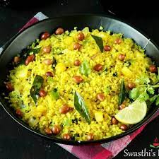

Poha Recipe - Maharashtrian Style!

Poha recipe is a popular Maharashtrian breakfast made from flattened rice, herbs and spices. It is a staple breakfast in our home which we all love.
Ingredients
- Poha
- Onions
- Tomatoes
- Spices
Step-by-Step Process
- Stir fry the onions.
- Add tomatoes and let it cook for 5-7 minutes.
- Add the spices in the appropriate amount
- Add poha and mix it well.
- Garnish with curry leaves before serving.